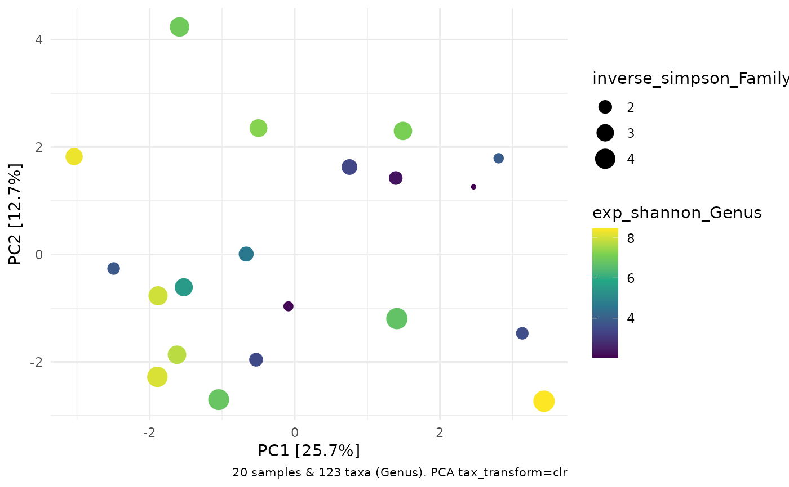

R/ps_calc_diversity.R
ps_calc_diversity.RdWrapper around microbiome::diversity() function. Takes and returns a phyloseq object. Calculates an alpha diversity index at a given taxonomic rank. Returns phyloseq unaggregated, with an additional variable. Variable name is by default created by pasting the index and rank.
phyloseq
taxonomic rank name, or "unique"
name of diversity index from microbiome::diversity(). One of: "inverse_simpson", "gini_simpson", "shannon", "fisher", "coverage"
exponentiate the result? (i.e. return e^index) - see details
name of the variable to be added to phyloseq sample data
phyloseq
Don't filter taxa before calculating alpha diversity.
See the following resources for a discussion of exponentiated diversity indices http://www.loujost.com/Statistics%20and%20Physics/Diversity%20and%20Similarity/Diversity%20of%20a%20single%20community.htm http://www.loujost.com/Statistics%20and%20Physics/Diversity%20and%20Similarity/EffectiveNumberOfSpecies.htm
data(ibd, package = "microViz")
ibd %>%
ps_filter(abx == "abx") %>%
tax_fix() %>%
ps_calc_diversity("Genus", index = "shannon", exp = TRUE) %>%
ps_calc_diversity("Family", index = "inverse_simpson") %>%
tax_transform(rank = "Genus", transform = "clr") %>%
ord_calc("PCA") %>%
ord_plot(
colour = "exp_shannon_Genus", size = "inverse_simpson_Family"
) +
ggplot2::scale_colour_viridis_c()
#> Warning: `transformation` argument deprecated, use `trans` instead.
